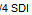
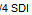

#Setup SDI port input front-end
#This routine will allow the user to select SDI port from either MUX or Processing tabs
#This script assume that the Java GUI is already running.
#inputs: required: boardNum=<1..3> sdiPort=<1..8> tabName=[Mux (default), Processing]
#Usage: select_sdi_port.sikuli boardNum=3 tabName=Mux sdiPort=8
#Usage: select_sdi_port.sikuli boardNum=3 tabName=Processing sdiPort=8
###############################################################
#common code for every sikuli code. Do not remove this section
from me7klib import *
###############################################################
#YOUR code start here
###############################################################
#This is your check for the inputs that you are expecting.
def Check_args():
#checking for required arguments
Check_arg('boardNum')
Check_arg('sdiPort')
if not Get_arg('tabName'):
Set_arg('tabName', 'Mux')
Print_debug('tabName is not defined. Will use Mux as default.')
my_tab = Get_arg('tabName')
if my_tab == 'Mux' or my_tab == 'Processing':
Print_debug('tabName ' + my_tab + ' is valid.')
else:
Exit_program('Invalid tabName given not in range (Mux/Processing): ' + my_tab, 2)
Check_args()
############################################################
#Main program definitions code start from this point
#Any global variables here
my_boardnum = int(Get_arg('boardNum'))
my_tab = Get_arg('tabName')
my_sdiport = int(Get_arg('sdiPort'))
#Any definitions are here
def Select_Board():
#First navigate to the correct tabs
Set_arg('tabName', 'Mux')
RunSikuli('nav_tabs')
#First reset everything to collapse tree
find(Pattern( ).similar(0.90)); click(Pattern(
).similar(0.90)); click(Pattern( ).similar(0.90).targetOffset(-14,0)); doubleClick(Pattern().similar(0.90).targetOffset(-300,23));
if not exists(): doubleClick(Pattern().similar(0.90).targetOffset(-300,23))
wait()
#clicking on the correct board
if my_boardnum == 1: doubleClick(Pattern().targetOffset(5,-26)); sleep(1)
elif my_boardnum == 2: doubleClick(Pattern().targetOffset(4,-8)); sleep(1)
elif my_boardnum == 3: doubleClick(Pattern().targetOffset(5,10)); sleep(1)
elif my_boardnum == 4: doubleClick(Pattern().targetOffset(4,29)); sleep(1)
else:
Exit_program('Invalid board range provided outside of (1..4): ' + my_boardnum)
if exists(Pattern().similar(0.80)): Print_debug('SDI selection ran fine. ')
else: Exit_program('SDI selection failed. ', 1, 1)
def Select_SDI():
if my_sdiport == 1: find(); click()
elif my_sdiport == 2: find(); click()
elif my_sdiport == 3: find(
).similar(0.90).targetOffset(-14,0)); doubleClick(Pattern().similar(0.90).targetOffset(-300,23));
if not exists(): doubleClick(Pattern().similar(0.90).targetOffset(-300,23))
wait()
#clicking on the correct board
if my_boardnum == 1: doubleClick(Pattern().targetOffset(5,-26)); sleep(1)
elif my_boardnum == 2: doubleClick(Pattern().targetOffset(4,-8)); sleep(1)
elif my_boardnum == 3: doubleClick(Pattern().targetOffset(5,10)); sleep(1)
elif my_boardnum == 4: doubleClick(Pattern().targetOffset(4,29)); sleep(1)
else:
Exit_program('Invalid board range provided outside of (1..4): ' + my_boardnum)
if exists(Pattern().similar(0.80)): Print_debug('SDI selection ran fine. ')
else: Exit_program('SDI selection failed. ', 1, 1)
def Select_SDI():
if my_sdiport == 1: find(); click()
elif my_sdiport == 2: find(); click()
elif my_sdiport == 3: find( ); click()
elif my_sdiport == 4: find(); click()
elif my_sdiport == 5: find(
); click()
elif my_sdiport == 4: find(); click()
elif my_sdiport == 5: find( ); click()
elif my_sdiport == 6: find(
); click()
elif my_sdiport == 6: find( ); click()
elif my_sdiport == 7: find(
); click()
elif my_sdiport == 7: find( ); click()
elif my_sdiport == 8: find(); click()
else: Exit_program('Invalid sdi port range provided outside of (1..8): ' + my_sdiport, 2)
if exists(
); click()
elif my_sdiport == 8: find(); click()
else: Exit_program('Invalid sdi port range provided outside of (1..8): ' + my_sdiport, 2)
if exists( ): find(
): find( ); click();
#######################################################
#Main program flow
Select_Board()
Select_SDI()
); click();
#######################################################
#Main program flow
Select_Board()
Select_SDI()